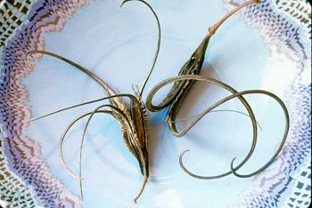

The martynia is an old-time garden curiosity very much unrecognized for its culinary merits. You might call it the okra lover’s Holy Grail because the martynia has the flavor of okra, only intensified, and sometimes with an undertone of the highly rated morel mushroom. Also, the interesting hooked shape of the baby pods lends them to all kinds of culinary applications, from stir-fries to pickles (see recipe, below). Considered a tropical annual, the plant is very easy to grow in most parts of the country and is not bothered by pests or wildlife.
Officially, the plant’s common name is martynia. Though it is sometimes referred to as the “unicorn plant,” the nickname most often used is “devil’s claw,” particularly on the Gulf Coast and in the Southwest where the plant is endemic. The colorful moniker refers to its dried seed pods, which are large, black, and have sharp hooks that latch on to clothing or animals. The label “martynia” came from Carl Linnaeus (considered to be the “father of taxonomy”) who named the plant Martynia annua after John Martyn, a professor of botany in Cambridge, England. However, this nomenclature is now considered obsolete. Botanically speaking, there are at least two distinct groups of martynias: the Ibicellae with thorny seed pods and the Proboscidea with smooth seed pods. The first group is primarily South American while the second is found throughout North America.
Of the Proboscidea, Proboscidea louisianica is the species considered native to the Gulf Coast states and the Southwest, and is the subject of this article. You may also see P. parviflora listed - some botanists think that both P. louisianica and P. parviflora are subspecies indigenous to the United States, although I see no difference between them other than flower color, and treat the two classifications as synonyms.
Martynias usually grow to 2 to 3 feet tall. The stems are weak, so the plants tend to topple over if they grow much higher. The leaves are broad, round, and, along with the tubular flowers, remind me of catalpa trees. The entire plant is covered with tiny hairs that exude a slippery juice and a musky odor some people find unpleasant.
The musky hairs act as a deterrent against herbivores that would otherwise readily consume the succulent leaves and small pods hidden beneath them. For this reason the plants are safe from deer, groundhogs or anything else that might otherwise eat them.
While martynias can hold their own against wild animals, they are not people-proof: The seed pods have been part of the Native American diet for centuries. The first American seedsman to sell martynias was Bernard M’Mahon of Philadelphia, who listed the seed in his 1805 catalog. For the colonial elites, it was largely an ornamental raised for its eye-catching flower clusters. In the 1840s, martynias began to show up in cookbooks, mainly in the form of pickling recipes. Since then, they’ve been grown in so many parts of the United States that they have naturalized far beyond their original habitat and can be found as far north as Maine and Minnesota. If tomatoes will grow in your garden, so too will martynias. The plants are hardy and prolific - so much so that in the state of Washington, they are classified as a noxious weed.
To get started, soak the seeds in water for 8 hours, then sow them in individual pots in late April, about four to five weeks ahead of planting. If they are planted in early June in deep, rich and sandy compost without disturbing the roots, no further fertilization will be required. Harvest can start a month later because once established, martynias grow quickly.
For a good supply of pods for the kitchen, 15 to 20 plants should be sufficient. Each plant should stand 18 to 24 inches from one another in rows 3 feet apart.
Wear gloves when harvesting the pods if the smell bothers you, or wash off with lemon juice immediately after picking. (You will want to rinse the pods; they too are covered with the smelly hairs.) For culinary purposes, the pods must be picked very small, about 2 to 3 inches in length, well before the seeds begin to develop. The more you harvest the pods, the more the plants produce.
Production will start to decline when cool weather sets in during the fall - this is a good time to let many of the pods mature to save seeds for next year’s crop. As they mature, the pods become woody and the outer green skin peels off, leaving the black seed pod. The seed is ripe once the pods are completely dry. They have hard, sharp points, so handle them with caution (it often takes a pair of pliers to split them open). Whole pods can be stored in a paper bag all winter, or the seeds can be removed and stored in an airtight jar. The high protein seeds are edible (they taste like sunflower seeds), and the black pods are used in floral arrangements. I have even seen them sprayed gold and turned into Christmas wreaths.
Much like okra, martynia pods lend themselves well to pickling. Choose pods that are 2 to 3 inches in length. Larger pods will begin developing woody fibers that will not break down in cooking. Be sure to add enough hot pepper to give the pickle a little kick.
Spicy martynia pickles are excellent with cold beer and barbecue. (If you cannot obtain martynias, this recipe will also work with baby okra.)
1 pound small martynia pods, well rinsed in cold water
4 to 5 small hot peppers, or to taste
6 cloves garlic, trimmed and cut in half lengthwise
1 tbsp black peppercorns
1 tbsp celery seed
1 medium onion, cut in half lengthwise and sliced paper thin
1 cup water
2 cups white vinegar
3⁄4 cup sugar
1 tbsp salt
3 tbsp tomato paste
Soak the martynias overnight in heavily salted water, then drain and shake dry in a colander.
Combine the martynias, hot pepper, garlic, peppercorns, celery seed and onion in a deep work bowl. Pack this mixture into a hot, sterilized 2-quart canning jar. Heat the water, vinegar, sugar, salt and tomato paste in a saucepan and bring to a rolling boil over high heat for 2 minutes. Use a whisk to break down the tomato paste until it is fully dissolved. Pour the boiling hot mixture over the martynias and seal. Cool on a rack, then store in the refrigerator 2 to 3 weeks before using. Be certain to use a small mouth jar, which will keep the martynias pressed down in the brine - as they marinate, they will eventually settle. Yields 2 quarts.
Martynia pickles should be stored in the refrigerator because they aren’t as acidic as most pickles and may spoil at room temperature.
Native Seeds/SEARCH; Tucson, Ariz. (sells martynia under P. parviflora)
Fragrant Path; Fort Calhoun, Neb.
Heirloom Vegetable Gardening: A Master Gardener’s Guide to Planting, Seed Saving and Cultural History by William Woys Weaver, now on CD. If you want to explore the fabulous flavors, fascinating history and amazing diversity of vegetables, this is the book to start with. Food historian and Mother Earth contributing editor Will Weaver profiles 280 heirloom varieties, with authoritative growing advice and incredible recipes. First published in 1997, Heirloom Vegetable Gardening has since been out of print, with used copies selling online for as much as $300. We are proud to present the original text, with color photos, as a digital book on CD-ROM. Order now.
|
ROB CARDILLO Martynias are versatile and easy to grow. |
ROB CARDILLO Martynias are not bothered by pests or wildlife, thanks to the musky slime they exude. |
ROB CARDILLO Martynia pods make excellent spicy pickles |
|
 DAVID CAVAGNARO The sharp hooks of martynias’ dried seed pods gave the plant its nickname of “devil’s claw.” The seeds inside taste like sunflower seeds, but you may need pliers to get them out. |
|
|